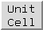

Unit Cell 
Unit Cell builds crystallographic unit cells
using information in PDB files.
A crystallographic unit cell consists of a unique set of coordinates,
duplicated and transformed according to the crystallographic and
(if present) noncrystallographic symmetries in the crystal.
Unit Cell can be used to regenerate the full unit cell, or only
those parts defined by
crystallographic symmetry or noncrystallographic symmetry.
See also:
Crystal Contacts,
Multiscale
Models,
sym,
fetching PQS files
There are several ways to start
Unit Cell, a tool in the Higher-Order Structure category.
Once a PDB file has been
opened in Chimera, Unit Cell can generate symmetry-related
copies if the PDB header contains sufficient information.
In the dialog, Molecule can be set to any open molecule model.
The space group, unit cell parameters, and numbers of transformation matrices
available for the current Molecule are shown.
If the PDB file has no CRYST1 record, the space group and cell parameters
fields will be blank. If the PDB file also lacks SMTRY and MTRIX
information, or if the model was not read from a PDB file, it will not
be possible to build a unit cell.
- Make copies loads copies of the coordinates from the
same source as the originally opened model (a local file or a file
fetched from the Web) and transforms them as
specified by the options.
- Outline toggles whether a white outline of the unit cell is shown.
- Delete copies removes all copies of the molecule except the original.
Close simply dismisses the dialog, while Help opens this
page in a browser window.
Clicking Options reveals additional settings
(clicking the close button  on the right
hides them again):
on the right
hides them again):
- Use SMTRY records in PDB header
- The SMTRY1, SMTRY2, and SMTRY3 records found in REMARK 290
contain the rows of transformation matrices defining the
crystallographic symmetry.
These records are not present in all PDB entries.
- Use CRYST1 record if SMTRY records are missing
- The CRYST1 record contains the unit cell size in angstroms, the cell angles,
and the name of the space group. The transformations defining the
crystallographic symmetry can be looked up in a table by space
group name. Some PDB entries contain nonstandard space group names
that are not in the table. When this occurs,
the number of space group symmetries is reported as zero; if the
SMTRY matrices are also missing, then the crystal packing is unknown.
- Use MTRIX records for non-crystallographic symmetry
- The MTRIX1, MTRIX2, and MTRIX3 records contain the rows of transformation
matrices defining the noncrystallographic symmetry.
Only a small fraction of
PDB entries have MTRIX records (~10% in 2003). Most of these describe how
to transform the coordinates of one chain to match closely the coordinates
of another chain already present in the PDB file. In a few cases (~0.25%
of PDB entries), the MTRIX records describe a transformation that produces
a new copy whose coordinates are not already in the file.
These two cases are distinguished by the contents of
column 60 in the MTRIX records. A "1" means that
the transformation yields coordinates that are already given (these
MTRIX records are ignored by Unit Cell), whereas a blank space
means that the transformation will produce a new copy.
MTRIX column 60 is set incorrectly in some files; for example,
it is "1" in 2btv even though the MTRIX records
define coordinates not present in the file. Further,
MTRIX records are sometimes missing. For example, 1cd3 has no MTRIX
records, but the remarks describe how to produce them from the BIOMT
records. Of course, this cannot be handled by Unit Cell.
MTRIX records do not describe crystallographic symmetries, but
define additional symmetries of the asymmetric unit of the crystal.
Because the copies of the molecule occupy nonequivalent positions
in the crystal, they usually have small structural differences due
to differing crystal contacts.
Thus, an independent set of coordinates is usually included for these copies,
and MTRIX records are not needed.
MTRIX records are often used for icosahedral virus particles, where
the PDB file will include the coordinates of one molecule in the shell
and MTRIX records describing how to place copies that are
not crystallographically equivalent.
The size of the virus particle precludes independent refinement
of coordinates for each copy of a molecule in the shell.
- Cell origin coordinates (default 0 0 0)
are in unit cell lengths and describe translations of the unit cell
along its axes.
Values of a coordinate that differ by integer amounts are equivalent;
e.g., (0.3 0 0) is equivalent to (-0.7 0 0) and (4.3 0 0).
Changing the origin may rearrange the copies and shift the outline (if present).
The shift will occur in the direction that maintains the center
of the original copy within the box.
- Number of cells (default 1 1 1, a single cell) allows
generating a block of multiple unit cells.
The three values specify dimensions in number of cells along the
unit cell axes.
Changes in cell origin or number can be applied by pressing Enter (return)
or clicking the Make copies button.
Limitations
Many problems are due to information that is missing
from (or incorrect within) the input PDB file.
One way to validate symmetry information is to identify steric clashes
with the Crystal
Contacts tool.
Unit Cell does not generate multimers defined by BIOMT records,
but this can be done with
Multiscale
Models or the command
sym.
UCSF Computer Graphics Laboratory / September 2009